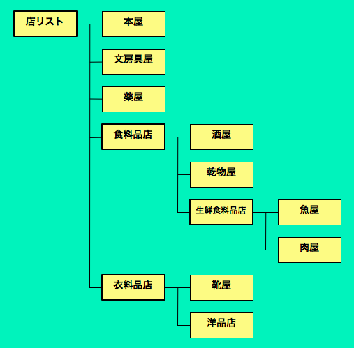

Raspberry Piをメディアサーバ/プレーヤにしよう (1)
ArduinoやRaspberry Piのようなワンボードコンピュータが流行しています。
工作が大好きな女子大生がこういうガジェットを使って変な工作をする
「ハルロック」という漫画が週間モーニングに連載されるなど、
ついにワンボードコンピュータの時代がキタか! という気がします。
私が高校生だったころ(1970年代後半)は、
intelの8008のようなCPUを買ってコンピュータを自作していたものですが、
こういう工作趣味の世界が再び流行してきたのは大変喜ばしいことです。
私もハルロックの主人公「はるちゃん」に負けてはいられない!
ということで工作机を復活させたりしているのですが、
老眼気味で小さい部品のハンダづけなどに苦労しています。
はるちゃん
1990年代のはじめ、
まだWebが存在しなかったころ、
私は今のMac OSの前身であるNeXT Workstationの上で、
今と同じようにEmacsでプログラムを書いたりTeXで論文を書いたりしていました。
NeXTStationは15MIPS程度でしたがRaspberry Piは数百MIPSの性能を持っていますから、
値段は1/100になったのに性能は100倍になったといえます。

NeXTStationとRaspberry Pi
Raspberry Piは安価な小型ワンボードコンピュータであるにもかかわらず
DebianなどのLinuxが動作し、標準的なUSB/Eternet/HDMIを利用でき、
ハードウェア入出力ポートも登載しているので、
様々な実用的な用途に利用することができます。
Arduinoのようなワンボードコンピュータは
センサを駆使するユビキタスコンピューティングには向いているのですが、
単体ではネット接続ができませんし、
プログラミング環境も充分ではありません。
一方、Raspberry Piの場合はLinuxが動くので、
パソコンと同じやり方でネット通信もプログラム開発もできるのが嬉しいところです。
最近は
Intel Edisonや
BeagleBone,
Banana Pi
など様々な小型ワンボードコンピュータが利用可能になっており、
この範疇の製品のなかでRaspberry Piが最も高性能というわけではありませんが、
現時点ではRaspberry Piは最もポピュラーなので
安心して利用できるといえるでしょう。
汎用コンピュータとして使えるRaspberry Piですが、
普通のパソコンやタブレットなどに比べると圧倒的にパワー不足ですし、
ブラウザが弱力だったりコンパイルに時間がかかったりするので、
Web閲覧やプログラム開発といったパソコン的な用途にはあまりおすすめできません。
また、
しばらく使っていると、
電源まわりのトラブルがあったり /
SDカードの中身が何故か消えてしまったり /
USBの抜き差しに起因するトラブルがあったり /
パソコンとの安定度の違いを感じてしまうので、
信頼性が必要なサーバなどに使うこともあまりおすすめできません。
普通の場所でパソコンのかわりに使うのではなく、
これまでコンピュータを設置しにくかった場所で、
新しい用途のために使ってみるというのがよい気がします。
私の研究室では、ネット経由でドアを開閉したり、
研究室内のセンサ情報を集めて外部からアクセス可能にしたり、
様々な「実世界コンピューティング」のためにRaspberry Piを活用しています。
ハード/ソフトのトラブルがあったとしても、
それも練習だと鷹揚に構えて、
気軽に修理したり再インストールしたりしながら利用しています。
Raspberry Piをメディアプレーヤとして使う
最近のテレビは大抵インターネット接続機能を持っていますし、
最近はテレビをメディアプレーヤとして使うための様々な装置が販売されています。
これらの装置をTVに挿しておけば、
リモコンなどからコントロールすることによってネットやハードディスクのコンテンツをテレビで楽しむことができるので便利です。
テレビの横にパソコンを置いておけばこのような装置は必要ありませんが、
普通のパソコンはリモコン操作しやすくありませんし、
動画などの表示専用にパソコンを使うのはもったいない感じがしますから、
こういった専用機器は需要があるといえるでしょう。
これらの機器を導入すると、
普通のテレビでネット上の大量のコンテンツを楽しむことができるようになるのは大変便利なのですが、
従来の家電のような「リモコンによる制御」感覚満載なのが嫌なところです。
エンジニアとしては、
コンテンツ選択のインタフェースが決まっているのが面白くないかもしれませんし、
私はユーザインタフェースの研究者なので、
もっと自由に楽にコンテンツを選ぶ方法があるだろうにと思ってしまいます。
前述のような専用機器のかわりにRaspberry Piを使えば、
安価に動画などを再生できる装置となるうえに、
動作を自由に制御できるというメリットがあります。
ブラウザやPDFビュワーなどを駆使すれば、
幅広いコンテンツをブラウズすることもできるようになるでしょう。
Raspberry Piは計算力は貧弱ですが、
動画や音楽を再生する機能は充分ですし、
HDMI出力が標準登載されているので、
「Raspberry Piをテレビに接続して動画/音楽プレーヤとして使う」
という活用方法は良さげに思われます。
実はRaspberry Piは、
CPU性能はBeagleBoneなどと比べて劣っているのですが、
動画再生機能だけは他のワンボード計算機より優れているので、
Raspberry Piをメディアプレーヤとして利用することは理にかなってるといえるでしょう。
実際、Raspberry Piをメディアプレーヤとして使うための「RaspBMC」という
AV再生専用のディストリビューションも公開されており、
これを利用すると簡単にRaspberry Piをこれらの専用機器と同じように使うことができます。
しかしRasBMCはRaspbianのような標準指向のOSではありませんし、
ブラウザを簡単に表示することもできないので自由度が充分とはいえません。
Raspberry Pi用のOSとして最も一般的なRaspbianに対して様々なコントロールを行なうことによって
動画/音楽/写真/Webなどを自由に表示させることにすれば、
かなり便利なシステムを作ることが可能になりそうです。
Gear
最近のテレビのリモコンには何十個ものボタンがついているのが普通で、
使いにくいものの代表のように言われていますが、
新しいメディアプレーヤでは多少コントロールを簡単にする工夫がなされています。
初代iPodでは回転ダイヤルや上下左右ボタンを使ってコンテンツを選択できるようになっていましたし、
最近のAppleTVやApple Remoteでは
少ない数のボタンで様々な操作を行なえるようになっています。
iRiverのU10という音楽/動画プレーヤでは
筐体の上下左右のエッジがボタンになっており、
これらを押すことによってコンテンツを選択できるのが便利でした。
携帯プレーヤu10(左)とAppleRemoe(右)の4方向ボタン
MacやWindowsのデスクトップ画面では、
ファイルの階層構造を視覚化/ナビゲーションするためにいくつかの方法が用意されており、
キー操作で階層型ファイルシステムのナビゲーションを行なうことができます。
Macのファインダ画面
パソコンや携帯機器のキーやボタンを利用して階層構造データのナビゲーションを行なう場合、
階層を上下に移動したり項目のリスト内を移動したりすることによって目的の情報を捜すようになっているのが普通です。
たとえば上下矢印キー( )
を使ってファイルやフォルダを選択したり、
左右矢印キー( )
を使って階層を移動したりすることによって目的のファイルに到達できます。
キーの数を極限まで減らす!
階層移動とリスト内移動にキーを割り当てると4個のキーが必要になってしまうので、
前述の各種リモコンやパソコンのデスクトップ画面では上下左右矢印キーで
階層ナビゲーションを行なうようになっているのが普通です。
しかしキーは本当に4個必要なのでしょうか?
2個のスイッチだけで階層情報のナビゲーションを実行することができれば、
より単純な装置を使って階層情報のナビゲーションが可能になり、
いつでもどこでも誰でも簡単にデータを検索することができるようになる可能性があります。
私は、2個のキーだけを使って階層的なコンテンツをナビゲーションできるようにする
「Gear」というインタラクション手法を提唱しています。
Gearでは、以下の方法を用いることによって
2個のキー ( と )
だけによる階層情報のナビゲーションを可能にしています。
- 選択中の項目に下位層が存在するとき、キー入力を行なわずに待つと下位層が自動的に展開され，下位層の最初の項目が選択される
- 項目リストの端を選択しているとき，さらに
を押すと下位層は閉じられてひとつ上の層の項目が選択される
以下のような構成のショッピングモールの店をGearでナビゲーションしてみましょう。

最初は以下のようなリストが表示されます。
(1) 初期状態
ここで
を3回押すと「食料品店」が選択されますが、
そこで操作を中断して一定時間待つと「食料品店」の下位層が自動的に展開されて，
その最初の要素の「酒屋」が選択されます。
(2) 「食料品店」を選択
(3) 「食料品店」の下位階層を自動展開
ここで
を2回押して「生鮮食料品店」を選択したまま一定時間待つと，
下位層が自動的に展開され、最初の要素である「魚屋」が選択されます。
(4) 「生鮮食料品店」の下位階層を自動展開
つまり、
のようなキーを押さなくても，
一定時間待つことによって同様の効果が得られることになるわけです。
食料品店が選択されており、まだ下位層が展開されていない(2)の状態で
を押すと、
次の「衣料品店」が選択されます。
(5) 「衣料品店」を選択
ここで操作を止めて一定時間待つと
下位層が自動的に展開されて「靴屋」が選択されます。
(6) 「靴屋」を選択
(4)の状態で
を3回数押すと、下位層は自動的に閉じられて(3)の状態に戻ります。
さらに
を押すと「食料品店」の下位の層も閉じられ、
(2)の状態に戻ります。
このように、Gearでは
と
というふたつのキーを使うだけで、
階層構造を持つデータを開いたり閉じたりしながら
自由にナビゲーションできることになります。
映画や音楽などのコンテンツは、
パソコンのファイルと同じように階層的に管理するのが普通ですから、
この方法であらゆるコンテンツをナビゲーションできることになります。
「スイッチの数が4個でも2個でもあまり変わらないんじゃないか?」
と感じる人もいるかもしれませんが、
2個のスイッチだけを使うことには大きなメリットがあります。
- 普通のボタンやスイッチ以外の装置を利用できる
例えば、円板を右に回したり左に回したりする操作や、
棒を押したり引いたりする操作だけで階層コンテンツのナビゲーションを行なうことができます。
- 操作を迷うことがほとんどなくなる
入力装置が極端に単純な場合、可能な操作が限られていますから、
試行錯誤がとても簡単です。
- 様々な行動を入力操作として利用できる
右足を踏む動作と左足を踏む動作を
として利用したり、
右を向いたり左を向いたりする行動を利用したり、
様々な行動をナビゲーションのために利用することができます。
Raspberry Piの場合、
マウスやキーボードのような入力装置、ネット経由の通信、GPIO端子などを利用すれば、
様々な方法であらゆるコンテンツを簡単にナビゲーションするというのが可能になります。
次回はいろいろな入力装置を使って
実際にRaspberry Piをメディアプレーヤとして活用する方法を紹介したいと思います。
Mac上でのGear実装


{kind=link}